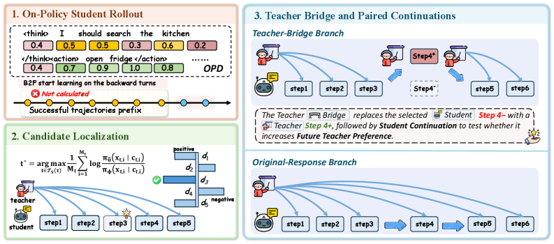

FutureBridge-OPD: Look Ahead Before You Distill
TL;DR
- "Look Ahead Before You Distill: Future Trajectory Validation of Teacher Guidance for Agentic On-Policy Distillation" (arXiv 2608.01953; Chishui Chen, Yaoyou Fan, Te Sun, Yi Yang, and 10 further authors; code released) attacks a temporal failure of agentic on-policy distillation: a teacher action can look better at the current turn and still push the student into a worse future.
- FutureBridge-OPD (FTB) finds the student turn with maximum teacher–student disagreement, has the teacher execute a one-turn "bridge" from the restored environment state, rolls the student forward from both branches, and keeps the teacher action only if the student's continuation after the bridge is more teacher-preferred than the continuation after its own action — a paired, future-validated gate that needs no reward labels beyond B2F's reference trajectories.
- With a Qwen3-32B teacher and Qwen3-1.7B student on ALFWorld/WebShop/ScienceWorld, FTB beats vanilla OPD by 16.6 and TCOD-B2F by 7.6 average success points; accepted bridge tokens are only 8.8% of optimization tokens but contribute 75.2% of the total positive distillation advantage.
Why this matters
On-policy distillation is this tracker's most-covered training recipe for a reason: dense token-level supervision on states the student actually visits, at a fraction of RL's cost. But everything the tracker has filed under multi-turn OPD — TCOD's teacher replay, Flux-OPD's evolving contexts, MOPD's no-free-lunch results — wrestles with the same structural issue: in multi-turn environments the student's small deviations compound, and the teacher's per-turn opinion is a myopic signal. Injecting a teacher action where disagreement is highest assumes local disagreement marks a fixable mistake. Sometimes it marks a place where the teacher's preferred action, executed in this student's trajectory, strands the student in states it cannot handle — teacher guidance that is locally superior and globally harmful.
FTB's contribution is to make the intervention decision empirical rather than assumed: actually execute the teacher's alternative in the environment, actually roll the student forward, and compare futures before adding the teacher action to the training buffer. That "validate guidance by its downstream effect on the student" move is the distillation-side analogue of what turn-level credit assignment (TRACE) did for agentic RL, and it lands with an unusually crisp accounting: a tiny, validated subset of teacher tokens carries three-quarters of the useful learning signal. For anyone running teacher→student pipelines for agents — which, per β-OPSD and the Liquid AI post-training stack (both added to the tracker today), is increasingly the industrial default — this is a concrete answer to "when should the teacher intervene?"
The core idea
Standard OPD minimizes the student–teacher divergence on student-visited states:
where \(\pi_\theta\) is the student, \(\pi_\phi\) the teacher, and \(h_t\) the interaction history at turn \(t\). FTB builds on TCOD's back-to-forward (B2F) curriculum: replay the first \(L-k\) turns of a successful reference trajectory, let the student finish, and grow \(k\) over training. The raw sampled distillation advantage of student token \(x_{t,i}\) in context \(c_{t,i}\) is
with \(\beta>0\) the distillation coefficient and \(\pi_{\bar\theta}\) the frozen rollout student; positive means the teacher likes the sampled token more than the student that produced it.
Localize. Score each student-controlled turn by its length-normalized disagreement \(\widehat{d}_{t}=\frac{1}{M_{t}}\sum_{i}\log\frac{\pi_{\bar{\theta}}(x_{t,i}\mid c_{t,i})}{\pi_{\phi}(x_{t,i}\mid c_{t,i})}\), which by autoregressive factorization is just \(-\overline{A}_t/\beta\), and pick the realized response the teacher supports least:
over student turns after the replayed prefix, excluding the final turn. At most one bridge per trajectory bounds validation cost.
Bridge and validate. The teacher generates \(a^{\mathrm{br}}_{t^\star}\) from the same history \(h_{t^\star}\); the environment state at \(t^\star\) is restored, the bridge executes in place of the student action, and the frozen student continues for \(H\) turns, giving \(\xi^{\mathrm{br}}\); the continuation after the original student action gives \(\xi^{\mathrm{base}}\). Define the teacher-preferred token ratio of any student-generated sequence \(y\):
the fraction of tokens the teacher assigns higher likelihood than the frozen student (length-normalized so a few large log-prob gaps can't dominate). The gate accepts the bridge iff its induced future is more teacher-aligned:
Accepted bridges (only the bridge action, not the continuations) enter the B2F experience buffer and are optimized with an advantage-weighted log-likelihood loss, \(\mathcal{L}_{\mathrm{bridge}}(\theta)=-\mathbb{E}\big[\frac{g(\tau)}{M_{\mathrm{br}}}\sum_{i}\operatorname{sg}[A_{i}^{\mathrm{br}}]\log\pi_{\theta}(x_{i}^{\mathrm{br}}\mid c_{i}^{\mathrm{br}})\big]\), whose gradient at \(\theta=\bar\theta\) matches a sampled squared teacher–student log-prob discrepancy objective (proof in the paper's Appendix D). No environment reward or success label is consumed beyond B2F's successful reference trajectories.
How it works

Figure 2 from the paper: (1) B2F student rollouts, (2) disagreement-based bridge-turn selection, (3) teacher bridge + paired student continuations, (4) the future-validation gate deciding what enters the buffer.
for each B2F rollout tau (teacher prefix replayed, student finishes):
# 1. localize
for each student turn t (excluding final):
d_t = mean_token log( pi_student(x|c) / pi_teacher(x|c) )
t* = argmax_t d_t # most teacher-disliked realized turn
# 2. bridge
a_br ~ teacher(. | h_{t*}) # student decoding config
restore environment state at t*
xi_br = execute a_br, frozen student rolls H turns
xi_base = continuation after original student action
# 3. future-validation gate
rho(y) = fraction of tokens in y with A_i(y) > 0
if rho(xi_br) > rho(xi_base):
add a_br to B2F experience buffer # continuations are evidence only
# 4. train student: OPD loss on own rollouts
# + advantage-weighted NLL on accepted bridge tokens
The two aggregations are complementary uses of one sampled signal: the signed mean advantage localizes a weakly supported realized action; the positive-token fraction characterizes the whole induced future. And the gate is deliberately relative — paired continuations share the pre-intervention history and the same frozen student, so their difference isolates the causal effect of swapping that one action.
Results

Figure 4 from the paper: FTB keeps the teacher-preferred token ratio higher across most student turns; removing bridge execution or future validation degrades it.
- Main setting (Qwen3-32B teacher, ALFWorld/WebShop/ScienceWorld, TCOD splits, 200 optimization steps for all methods): with a Qwen3-1.7B student, FTB beats vanilla OPD by +16.6 and TCOD-B2F by +7.6 average success points; with Qwen3-4B, +7.5 and +5.2. Baselines include TCOD-F2B and Guided-OPD.
- Student beats its zero-shot teacher on WebShop: the FTB-trained 1.7B outperforms both the 4B student and the zero-shot 32B teacher, taking simpler paths (7.67 steps average, 32% max-step rate vs 11.37 and 51% for the 4B) — validated local guidance seems to let the student develop a more efficient task-specific policy rather than imitating teacher verbosity.
- RL-trained teacher (Qwen3-8B-RL → Qwen3-4B): best on all reported metrics, +4.5/+4.3 average success over OPD/TCOD-B2F.
- Ablations: replacing the max-disagreement turn with a random turn hurts most; skipping actual bridge execution, or executing but skipping future validation, both consistently degrade. The full pipeline wins on all metrics.
- Signal concentration: bridge tokens are 8.8% of optimization tokens but contribute 75.2% of total positive distillation advantage. Over half of accepted bridges fire at the first student turn, ~85% within five; acceptance falls from 39.7% (turn 1) to 4–7% (late turns) — early deviations are both more common and more fixable.
- What bridges change: on ALFWorld 91.5% modify the student action (58.9% keep the action type, changing target/argument); on WebShop 68.9% modify, mostly arguments. Fine-grained corrections dominate wholesale rewrites.
- Cost: despite the extra bridge and validation rollout, FTB runs faster per step than vanilla OPD on ALFWorld (the authors attribute the paired machinery's cost as offset by shorter, more efficient student trajectories).
How it connects
- [Multi-Turn OPD via Teacher Replay (Microsoft)] — FTB is built directly on TCOD's B2F curriculum and inherits its splits; the delta is the look-ahead gate on when teacher actions may enter the buffer.
- [OPD Isn't a Free Lunch (MOPD)] and [OPD-Squared / On-Policy Delta Distillation] — the failure FTB targets (locally attractive, globally harmful teacher guidance) is a mechanism behind the no-free-lunch results; FTB is the first in this tracker to test the counterfactual future rather than reweight the local signal.
- [TRACE: Turn-Level Rewards] — same philosophical move on the RL side: judge a turn by what it does to the rest of the trajectory, not by its local score.
- [β-OPSD] (added today) — "RL derives targets, distillation trains" — pairs naturally: FTB's validated bridges are exactly the kind of dense, quality-controlled targets that compilation view wants.
- [Experiential Learning / Rubric Feedback as Privileged Information] — another route to richer-than-scalar supervision; EL widens the channel (advice instead of scores), FTB filters the content (only future-validated corrections).
Critical take
The gate never touches task reward: it accepts a bridge when the student's future becomes more teacher-like, on the bet that teacher-likeness is a good proxy for success. On these benchmarks — where the teacher is a much stronger model and B2F already anchors training to successful reference trajectories — the bet pays off, but it is circular in an important way: guidance is validated against the same teacher whose judgment is in question, so a teacher with a systematic blind spot (say, a bias toward an action pattern the environment punishes late) would validate its own bias. A success-labeled variant of the gate seems like the obvious ablation the paper doesn't run. Second, the machinery requires restorable environment state — trivially available in ALFWorld/WebShop/ScienceWorld simulators, mostly unavailable for real tool-use agents whose side effects (API calls, file writes, purchases) can't be rewound; the honest scope here is "simulator-trainable agents," the same restriction that quietly limits most of the agentic RL literature. Third, one bridge per trajectory and max-disagreement selection is a strong sparsity prior; the trigger-position analysis (85% of bridges in the first five turns) suggests it works because early errors dominate in these short-horizon tasks (15–30 steps) — at 200-step horizons, single-intervention validation with an \(H\)-turn window may localize much less cleanly (sensitivity to \(H\) is deferred to Appendix E). Still, the 8.8%-of-tokens/75.2%-of-signal statistic is the most convincing evidence yet in this tracker that agentic distillation quality is about which teacher tokens you train on, not how many.
If you remember three things
- Local disagreement proposes; the future disposes — FTB executes the teacher's alternative, rolls the student forward, and keeps the correction only if the student's induced future gets more teacher-preferred (\(\rho(\xi^{\mathrm{br}})>\rho(\xi^{\mathrm{base}})\)).
- Validated sparsity beats volume: 8.8% of training tokens (accepted bridges) carry 75.2% of the positive distillation advantage; +16.6 over vanilla OPD and +7.6 over TCOD-B2F with a 1.7B student.
- Watch the two constraints: the gate validates teacher-likeness (not success), and the method needs restorable environment state — both fine in simulators, both open problems for real-world agentic distillation.